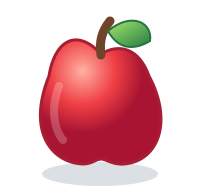
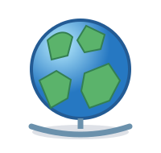
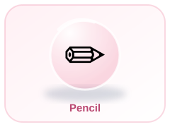

LOOK · SAY · LEARN
🌟 Grow Your Word Power!
Explore new words, hear how they sound and use them in your own sentences.



🔎 Find a word
This starter dictionary contains child-friendly words and explanations. More entries can be added as lessons grow.
📖 Word of the day
Dictionary results
✏️ Use a word
Choose one word and write your own sentence with it.
Your sentence is stored only in this browser on this device.